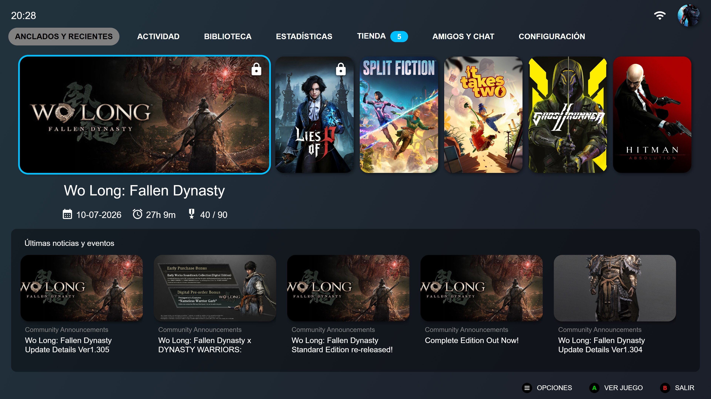
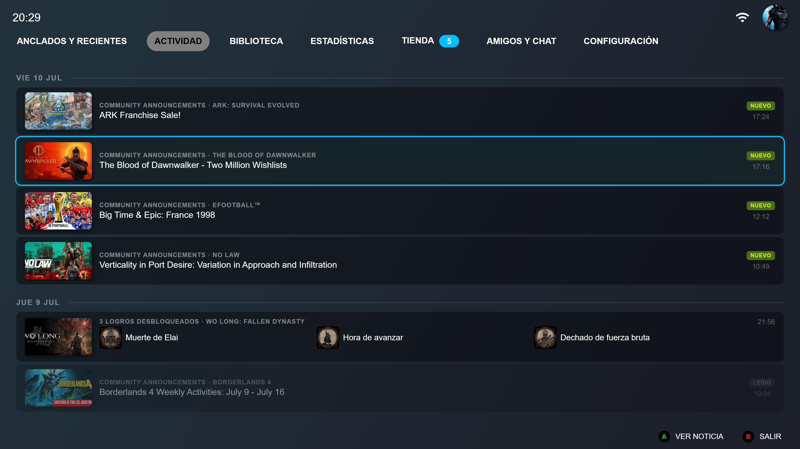
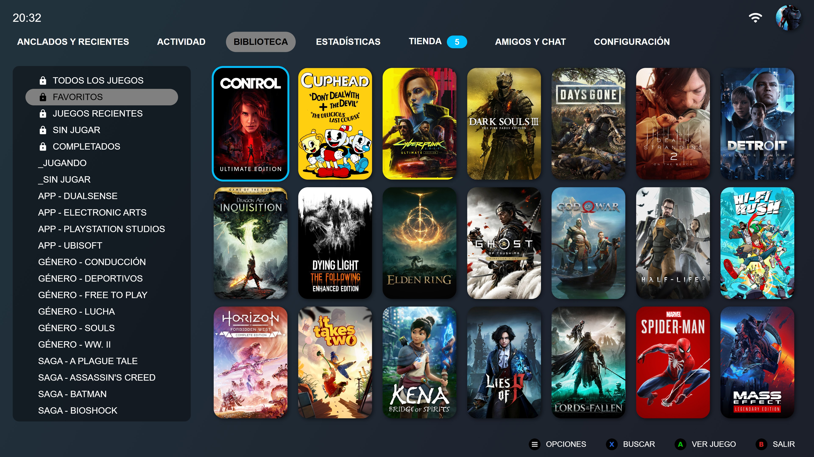
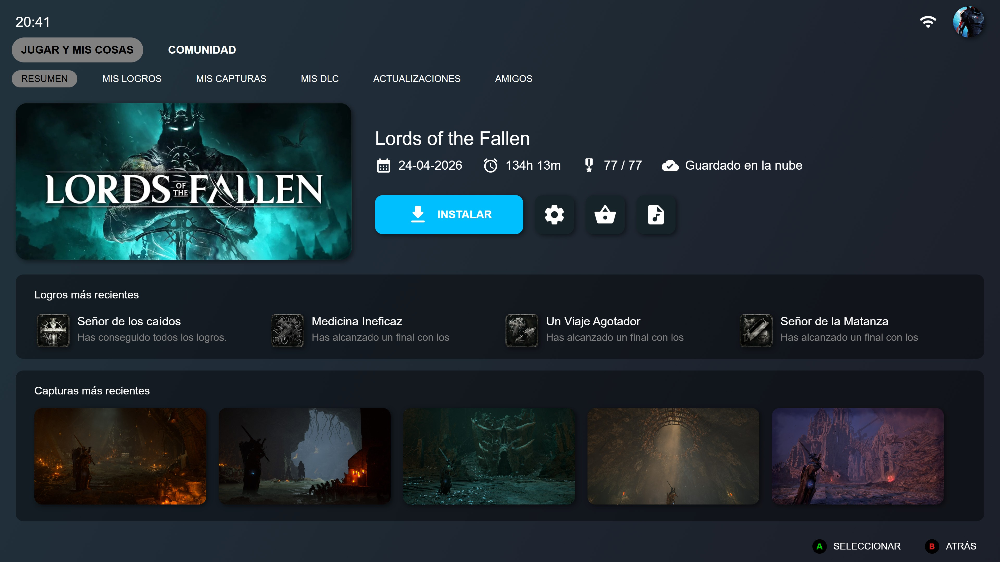
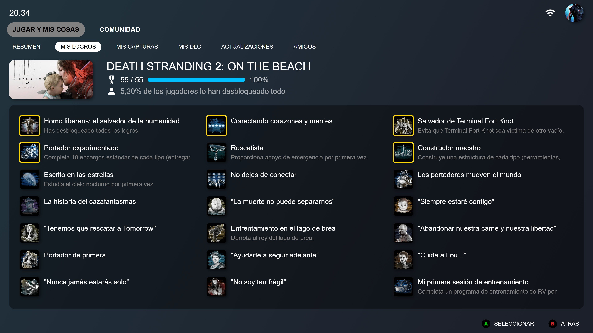
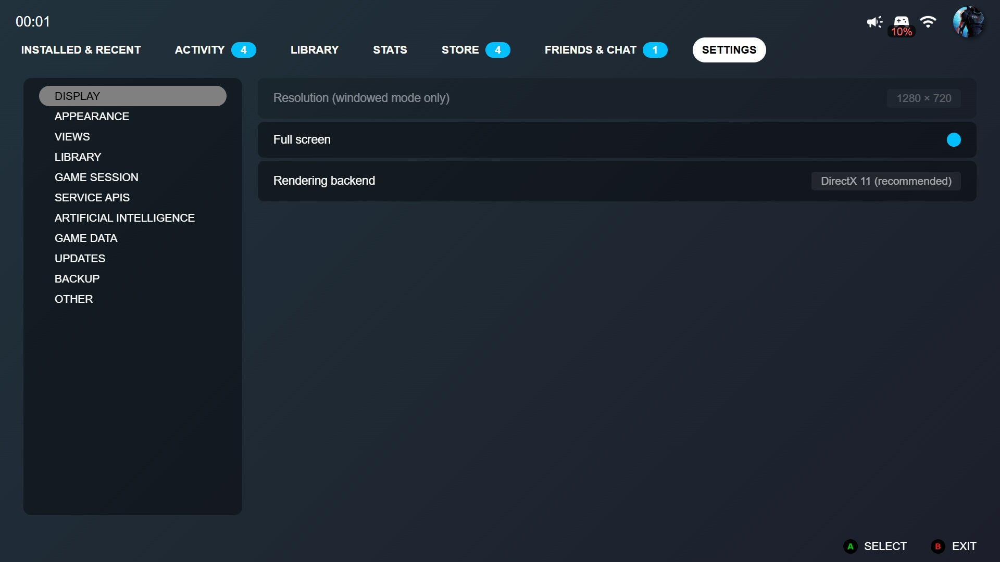

Recientes y Continuar
Retoma tu última partida en dos clics, con un resumen de lo que te has perdido desde la última vez que jugaste.
BigLauncher es un launcher gratuito para Steam, pensado de principio a fin para jugarse con mando desde el sofá. Recientes, Biblioteca, Estadísticas, Comunidad y mucho más, en una interfaz pulida y rápida.
Windows 10/11 y Linux · Requiere Steam instalado · Gratis y sin anuncios
Cada pantalla, cada popup y cada menú se navegan igual de bien con mando Xbox o teclado — sin dejar de lado el ratón si lo prefieres. Los iconos de botones también pueden mostrarse con estilo PlayStation o Nintendo.
Retoma tu última partida en dos clics, con un resumen de lo que te has perdido desde la última vez que jugaste.
Tras un rato de inactividad, la app se convierte en un modo atracción que repasa tu historial: timeline de juegos, estadísticas destacadas, mapa de calor anual y tus propias capturas de pantalla.
Un resumen tipo "Wrapped" de tu año jugando: horas totales, géneros favoritos, logros conseguidos y juegos completados.
Resúmenes del estado de un juego, respuestas a preguntas libres sobre tu progreso y un pequeño epílogo al completar un juego al 100%. Totalmente desactivable, y nunca se envía tu identidad ni tu cuenta de Steam.
El tema principal de cada juego suena de fondo mientras navegas, con un reproductor dedicado y soporte para tus propias bandas sonoras.
Discusiones, capturas, artwork y reseñas de Steam Community, más una comparativa de logros y tiempo jugado con tus amigos.
Una parte de lo que te espera — el resto lo descubres jugando.






BigLauncher es gratuito y portable: no necesita instalación, solo descargar y ejecutar.
Descargar última versiónNo. BigLauncher es un proyecto independiente, sin ánimo de lucro y no afiliado a Valve Corporation. "Steam" es una marca registrada de Valve.
No es obligatoria. Sin ella, BigLauncher sigue mostrando tus juegos instalados y funciona con normalidad, pero algunas funciones (biblioteca completa, logros, estadísticas, amigos) necesitan una API Key gratuita que se obtiene desde tu cuenta de Steam y se introduce en Configuración. Si no sabes dónde encontrarla, el propio menú de Configuración tiene un acceso directo para conseguirla.
El mando de Xbox está confirmado y probado. Para PlayStation y Nintendo, BigLauncher puede mostrar los iconos de botones con ese estilo desde Configuración, pero no está garantizado que el mando en sí funcione correctamente — depende de si el sistema lo reconoce como un mando estándar. El teclado funciona siempre.
Solo información sobre el propio juego (nombre, géneros, tiempo jugado, logros, noticias). Nunca se envía tu nombre de usuario, tu Steam ID ni tu API Key. La función es opcional y está desactivada por defecto.
Español, inglés, francés y alemán.
A través de los Issues del repositorio en GitHub.
Las novedades de cada versión publicada, tal y como aparecen en GitHub.
Cargando versiones…